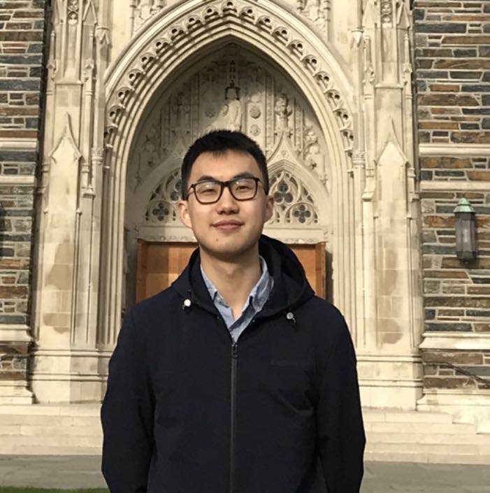

Ruiqi Zhong (ruiqi-zhong@berkeley.edu)
I am currently a second year PhD student in the Berekely NLP group,
advised by Prof. Dan Klein and Prof. Jacob Steinhardt.
I am broadly interested in the intersection of NLP with programming languages and machine learning, and exploring new machine learning research paradigms.
Specifically, I work on
I finished my undergrad at Columbia University and was advised by Prof. Kathleen McKeown.
Mentorship
Ph.D. students from the Berkeley NLP group have compiled
a list of resources
to prepare Berkeley undergrads for NLP researches, and hold
weekly open hours
to answer questions about NLP in general.
We are still experimenting this format, so feel free to email me if you have any thoughts on this!
I am also happy to talk about research personally. Just send me an email if you wanna chat with me.
If you specifically want to work with me, try finishing the project 2 of CS288 before contacting me.
Publications
Semantic Evaluation for Text-to-SQL with Distilled Test Suites
Ruiqi Zhong, Tao Yu, Dan Klein
EMNLP 2020
[paper] [code] [slides]
Understanding Attention Training via Output Relevance
Charlie Snell, Ruiqi Zhong, Jacob Steinhardt, Dan Klein
OpenReview preprint
[paper] [slides]
Semantic Scaffolds for Pseudocode-to-Code Generation
Ruiqi Zhong, Mitchell Stern, Dan Klein
ACL 2020
[paper] [code] [video] [slides]
Detecting and Reducing Bias in a High Stakes Domain
Ruiqi Zhong, Yanda Chen, Desmond Patton, Charlotte Selous, Kathleen McKeown
EMNLP 2019
[paper] [code] [poster]
Fine-grained Sentiment Analysis with Faithful Attention
Ruiqi Zhong, Steven Shao, Kathleen McKeown
arXiv preprint
[paper]
Subspace Embedding and Linear Regression with Orlicz Norm
Alexandr Andoni, Chengyu Lin, Ying Sheng, Peilin Zhong, Ruiqi Zhong
ICML 2018
[paper] [video] [slides]
Detecting Gang-Involved Escalation on Social Media using Context
Serina Chang, Ruiqi Zhong, Ethan Adams, Fei-Tzin Lee, Siddharth Varia, Desmond Patton, William Frey, Chris Kedzie, Kathleen McKeown
EMNLP 2018
[paper] [code] [video]
Paper Reading Guides (Chinese)
Debiasing NLP: Man is to Computer Programmer as Woman is to Homemaker?
Ruiqi Zhong, Yanda Chen, Junyao Shi
ICML2018 Fairness ML Best Papers.
Ruiqi Zhong, Xinyi Han
Miscellaneous
I represented Columbia University in ACM-ICPC and Putnam Math Competition during my Sophormore year (though it seems I was the bottle-neck of our teams).
I sleep at 11 p.m. and do not respond to later messages. Sometimes, however, I am actually awake; but I pretend not to see them anyways.
My favorite animation character and role model is Wenli Yang in Legend of Galactical Heroes.